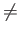
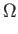
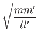

Next: The Quantum Adversary:
Up: Preliminaries
Previous: Quantum Oracle Models
Contents
Ambainis [1] proved the following fundamental
result:
Theorem 2.1.1 (Ambainis)
Let f be an N-bit Boolean function and let X and Y be two sets
of inputs such that
f (x)  f (y) whenever x X and y Y.
Let
P X x Y be a relation between X and Y with
the following properties:
- Every element of X is related to at least m elements of Y by
P.
- Every element of Y is related to at least m' elements of X by
P.
- For all i, every element x X is related to at most l
elements y Y such that
xi yi
- For all i, every element y Y is related to at most l'
elements x X such that
xi yi
Then

oracle queries are required by any quantum algorithm to compute f in
the bounded error setting.
This theorem will be the primary means of proving lower bounds in this
thesis. Its appeal is twofold; first, it leads to reasonably simple
proofs, and second, it unifies many existing lower bounds into a
single framework.
Subsections
Next: The Quantum Adversary:
Up: Preliminaries
Previous: Quantum Oracle Models
Contents
Matthew Hayward Lower Query Bounds in the Quantum Oracle Model GitHub Repository